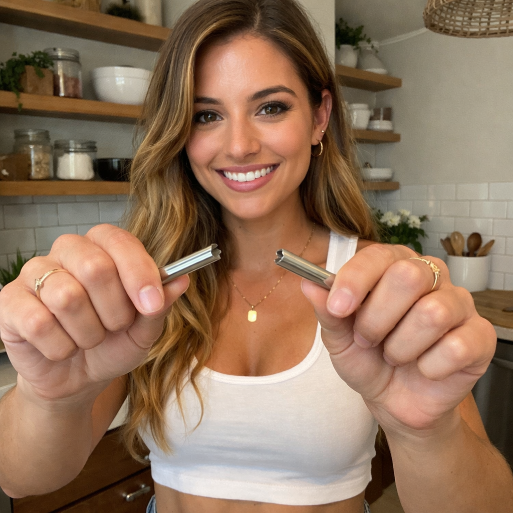
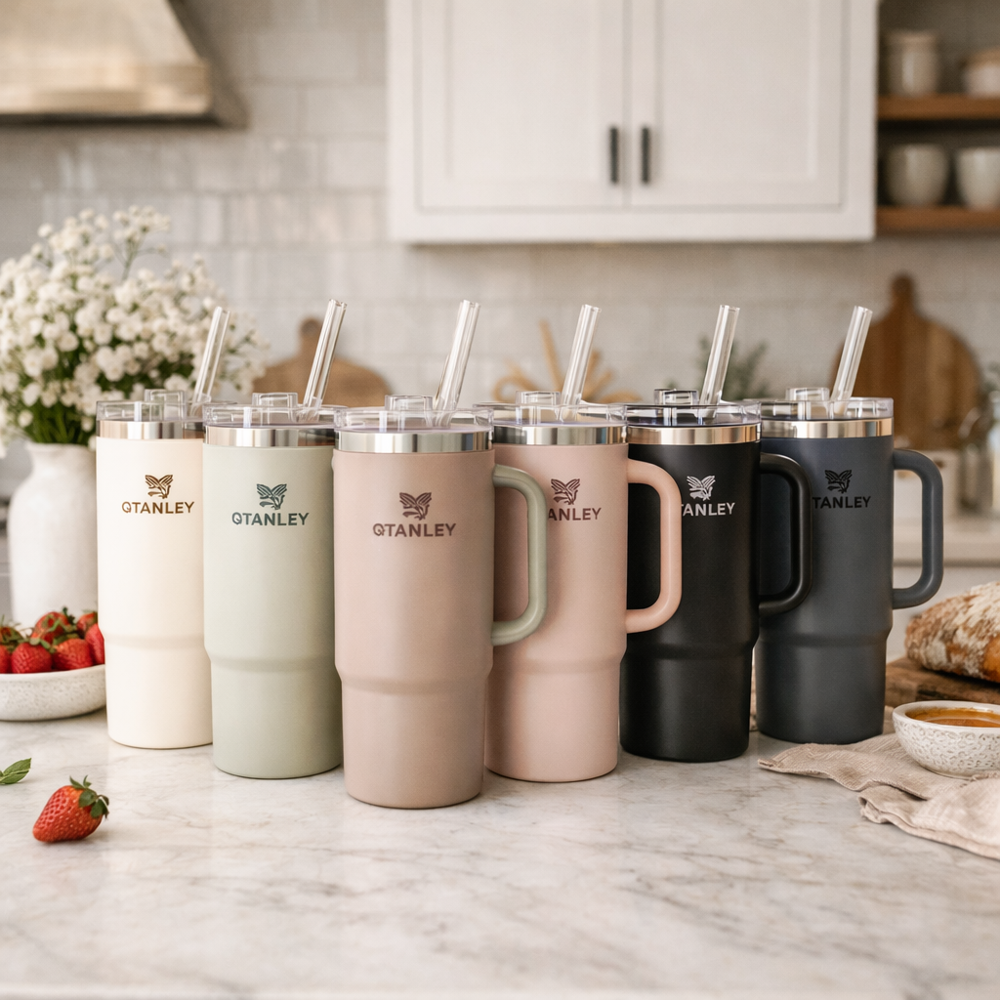

Strawesome Ad Drafts
3 belief-contradiction ads for Facebook | Leads to: "5 Reasons You Shouldn't Use Metal Straws"
BELIEF CONTRADICTIONS — Session 10 Approved Violations
Draft 1 · Flip Safety
Contradict: "Metal is safer"
S
···
Glass straws are safer than metal.
Not what you expected to hear.
You've been told the opposite your whole life.
Glass is fragile. Glass breaks. Glass is a liability.
Metal is solid. Metal is sturdy. Metal is the responsible choice.
But here's what nobody mentions:
Metal conducts heat. Burns your lips on hot coffee. Freezes them on iced drinks.
Metal harbors bacteria in seams you can't see and can't clean.
Metal chips teeth. Starbucks recalled 2.5 million metal straws after children were lacerated.
Metal leaches chromium and nickel into acidic drinks. That metallic taste isn't neutral.
In 2018, a woman in England fell while holding a jar with a metal straw.
The straw didn't bend. Didn't give.
It pierced her brain.
The coroner's warning: metal straws should not be used with lids that hold them in place.
"Unbreakable" was never the same as "safe."
The danger was never the glass.
The danger was the rigid, opaque tube you've been putting in your mouth because it "can't break."
5 reasons you shouldn't use metal straws: {url}
See more
~185 words

strawesome.com
5 Reasons You Shouldn't Use Metal Straws
What the metal straw industry won't tell you
👍 ❤️ 2.4K
Draft 2 · Attack Decision
Contradict: "I made the safe choice"
S
···
Metal straws are a dangerous choice.
Not because they're poorly made.
Because "unbreakable" was never the same as "safe."
You picked metal because it seemed solid.
Sturdy. The opposite of fragile.
That made sense.
But solid means rigid. And rigid means no give on impact.
Think about highway guardrails.
They flex when a car hits them. The guardrail bends — absorbing energy.
The car takes damage. The passengers survive.
Now imagine a concrete wall.
Same impact. Zero flex.
All the energy goes straight into the car.
Metal straws are concrete walls for your mouth.
One accidental bite. Chipped tooth.
One fall while drinking. Puncture wound.
One toddler running with a cup. The straw doesn't move.
In 2016, Starbucks recalled 2.5 million metal straws after reports of children with mouth lacerations.
In 2018, a UK coroner issued a warning after a woman died from a metal straw piercing her brain.
"Unbreakable" sounds like a feature.
Until you realize it just means something else breaks instead.
The safest materials aren't the hardest.
They're the ones that fail safely.
5 reasons you shouldn't use metal straws: {url}
See more
~195 words

strawesome.com
5 Reasons You Shouldn't Use Metal Straws
The "safe" choice isn't what you think
👍 ❤️ 3.1K
Draft 3 · Flip Strength
Contradict: "Metal is stronger"
S
···
Glass straws are stronger than metal straws.
That sounds backwards.
You've been taught that metal is the strong choice and glass is the fragile one.
But strength isn't about surviving a single impact.
Strength is about lasting.
Metal corrodes over time.
Metal develops micro-scratches that harbor bacteria.
Metal leaches chromium and nickel into your acidic drinks — coffee, juice, smoothies.
Metal conducts temperature extremes that stress the material with every use.
That "indestructible" straw is degrading every time you drink through it.
Glass doesn't corrode.
Glass doesn't scratch.
Glass doesn't leach.
Glass doesn't conduct.
Glass stays exactly the same on day one thousand as it was on day one.
Metal straws survive drops.
Glass straws survive decades.
One is impact strength.
The other is real strength.
The kind that means you buy once and never buy again.
5 reasons you shouldn't use metal straws: {url}
See more
~160 words

strawesome.com
5 Reasons You Shouldn't Use Metal Straws
Real strength isn't what you think
👍 ❤️ 2.7K